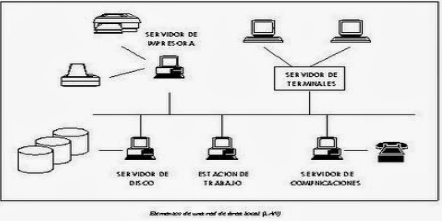

4.1 Aspectos básicos de la computación paralela
La computación paralela es una forma de cómputo en la que muchas instrucciones se ejecutan simultáneamente, operando sobre el principio de que problemas grandes, a menudo se pueden dividir en unos más pequeños, que luego son resueltos simultáneamente (en paralelo).
Ventajas
- Resuelve problemas que no se podrían realizar en una sola CPU y/o en un tiempo razonable.
- Permite ejecutar código de manera más rápida (aceleración).
- Permite ejecutar en general más problemas.
- Permite la ejecución de varias instrucciones en simultáneo.
- Permite dividir una tarea en partes independientes.
- Ofrece mejor balance entre rendimiento y costo que la computación secuencial.
Desventajas
- Mayor consumo de energía.
- Mayor dificultad a la hora de escribir programas.
- Número de componentes usados es directamente proporcional a los fallos potenciales.
- Retardos ocasionados por comunicación ente tareas.
- Altos costos por producción y mantenimiento.
- Si los procesos que están en condición de carrera no son correctamente sincronizados, puede producirse una corrupción de datos.
4.2 - 4.2.1 Tipos y clasificación de la computación paralela
- SISD (Single Instruction, Single Data): Instrucción Única, Datos Únicos. Un único procesador se encarga de gestionar simultáneamente un algoritmo como una única fuente de datos. SISD representa una organización informática que tiene una unidad de control, una de procesamiento y una de memoria similar a la computadora serie. Ejecuta las instrucciones secuencialmente y puede o no ser capaz de realizar procesamiento en paralelo, dependiendo de su configuración.
- MISD (Multiple Instruction, Single Data): Los procesadores múltiples son estándar en las computadoras que utilizan Instrucción Múltiple, Datos Únicos (MISD). Al utilizar varios algoritmos, todos los procesadores comparten los mismos datos de entrada. Pueden realizar simultáneamente muchas operaciones en el mismo lote de datos. La cantidad de operaciones se ve afectada por la cantidad de procesadores disponibles. La salida de un procesador se convierte en la entrada del siguiente.
- SIMD (Single Instruction, Multiple Data): Las computadoras que utilizan la arquitectura SIMD (Instrucción Única, Datos Múltiples) tienen múltiples procesadores que ejecutan instrucciones idénticas. Sin embargo, cada procesador proporciona las instrucciones con su colección única de datos. Aplican el mismo algoritmo a varios conjuntos de datos. La arquitectura SIMD cuenta con varios componentes de procesamiento, los cuales están bajo la supervisión de una única unidad de control.
- MIMD (Multiple Instruction, Multiple Data): Instrucción Múltiple, Datos Múltiples. Se caracterizan por la presencia de múltiples procesadores y cada uno de ellos es capaz de aceptar de forma independiente su flujo de instrucciones. Este tipo de computadoras tienen muchos procesadores y, además, cada CPU extrae datos de un flujo de datos diferente. Una computadora MIMD es capaz de ejecutar muchas tareas simultáneamente. Desarrollar los sofisticados algoritmos que impulsan estas máquinas es más complejo.
- SPMD (Single Program, Multiple Data): Programa Único, Datos Múltiples, son un subconjunto de MIMD. Cada uno de sus procesadores es responsable de ejecutar las mismas instrucciones. Es una programación de paso de mensajes utilizada en sistemas informáticos de memoria distribuida. un grupo de computadoras separadas, denominadas colectivamente nodos, forman una computadora con memoria distribuida. Cada nodo inicia su aplicación y utiliza rutinas de envío/recepción para enviar y recibir mensajes cuando interactúa con otros nodos.
4.2.2 Arquitectura de computadoras secuenciales
- La arquitectura de computadoras secuenciales se basa en el modelo introducido por John Von Neumann. En este modelo, encontramos los siguientes componentes:
- Unidad Central de Procesamiento (CPU): Es el corazón de la computadora y ejecuta las instrucciones.
- Memoria Principal: Almacena información, como programas y datos.
- Bus: Permite el flujo de datos entre la CPU y la memoria.
- Mecanismo de sincronización: Coordina las operaciones entre los componentes.
Ventajas
- Simplicidad: Los sistemas secuenciales son más fáciles de diseñar y entender. Siguen un flujo lógico paso a paso, lo que facilita su implementación.
- Predicción de rendimiento: Dado que las instrucciones se ejecutan en orden, es más sencillo predecir el rendimiento y calcular el tiempo de ejecución.
- Menos problemas de control: La ejecución secuencial reduce la complejidad de los problemas de control, como la gestión de conflictos en el acceso a recursos compartidos.
- Facilidad de depuración: En comparación con arquitecturas más complejas, las computadoras secuenciales son más fáciles de depurar y rastrear errores.
4.2.3 Organización de direcciones de memoria
Una dirección de memoria es un identificador para una localización de memoria con la cual un programa informático o un dispositivo de hardware pueden almacenar un dato para su posterior reutilización. Una forma común de describir la memoria principal de una computadora es como una colección de celdas que almacenan datos e instrucciones.
El direccionamiento de la memoria puede considerarse desde dos puntos de vista:
- Físico: Se refiere a los medios electrónicos utilizados en el ordenador para acceder a las diversas posiciones de memoria.
- Lógico: Se refiere a la forma en que se expresan y guardan las direcciones.
Notación
El sistema de numeración utilizado por los informáticos para representar las direcciones de memoria en el texto escrito no suele ser la decimal, sino el hexadecimal.
Un bus de direcciones de 8 bits puede acceder a 256 posiciones (en hexadecimal es el rango 00-FFh). En caso de direcciones de 16 bits, se puede acceder 65.536 posiciones (es el rango 0000-FFFFh).
4.3 Sistemas de memoria (Compartida)
La memoria compartida es aquel tipo de memorias que puede ser accedida por múltiples programas, ya sea para comunicarse entre ellos o para evitar copias redundantes. La memoria compartida es un modo eficaz de pasar datos entre aplicaciones.
Dependiendo del contexto, los programas pueden ejecutarse en un mismo procesador o en procesadores separados.
- Multiprocesadores: Se denomina multiprocesador a un computador que te permite abrir programas en más de una CPU por lo que puede ejecutar simultáneamente varios hilos pertenecientes a un mismo proceso o bien a procesos diferentes. Las computadoras multiprocesador presentan problemas de diseño. Estos problemas derivan del hecho de que dos programas pueden ejecutarse simultáneamente y, potencialmente, pueden interferirse entre sí. Existen 3 arquitecturas que resuelven estos problemas: Arquitectura UMA (Uniform Memory Access), Arquitectura NUMA (Non-Uniform Memory Access) y Arquitectura COMA (Cache-only Memory Access).
- Arquitectura UMA (Uniform Memory Access): Todos los procesadores comparten toda la memoria de forma simétrica.
- Arquitectura NUMA (Non-Uniform Memory Access): Cada procesador tiene acceso y control exclusivo a una parte de la memoria. Por lo que el acceso a esta memoria no es simétrico entre todos los CPU.
- Arquitectura COMA (Cache-only Memory Access): cada procesador tiene acceso y control exclusivo a una parte de la memoria caché.
4.3.1 Redes de interconexión dinámica (Indirecta)
Son redes que pueden cambiar la topología de comunicación durante la ejecución de los programas o entre dos ejecuciones de programas.
Las redes dinámicas se han utilizado esencialmente en los multiprocesadores de memoria compartida: la red dinámica soporta, por consiguiente, la carga de unir los N procesadores a los bancos de la memoria central.
4.3.1.1 Redes de medio compartida
Un medio compartido se refiere a un tipo de red donde múltiples dispositivos comparten un único canal de comunicación para enviar datos. Varios dispositivos, como computadoras, servidores, impresoras, etc., están conectados a través de un medio compartido, como un cable Ethernet o una red inalámbrica.
Cuando la red se quiere conectar a varios dispositivos conlleva a interferencias o colisiones, por lo tanto se debe de establecer un mecanismo que regule esto, esto nos lleva a la conmutación.
4.3.1.2 Redes conmutadas.
Son aquellas en la que la comunicación entre un host origen y un host destino se realiza mediante la transmisión de datos a través de una red de nodos intermedios.
Cada nodo almacena temporalmente la información antes de reenviarla
El proceso consta en 3 fases: establecimiento de la conexión, transferencia de la información y liberación de la conexión.
Características
- Se utilizan para comunicaciones a largas distancias.
- Los nodos no se preocupan del contenido de los datos.
- Los dispositivos finales son estaciones (Computadoras, teléfonos, etc.).
4.4 Sisitemas de memoria construida
Los sistemas de memoria construida son una forma de organización de la memoria en la computación paralela en la que cada procesador tiene su propia memoria local. Esto permite una mayor independencia entre los procesadores y reduce la necesidad de acceder a una memoria compartida.
4.5 Casos de estudio.
En el campo de la computación paralela, existen numerosos casos de estudio que han demostrado la eficacia y los beneficios de los enfoques paralelos en diferentes dominios. Algunos ejemplos incluyen el uso de computación paralela en simulaciones científicas, análisis de grandes conjuntos de datos, renderizado de gráficos y modelado de sistemas complejos.
